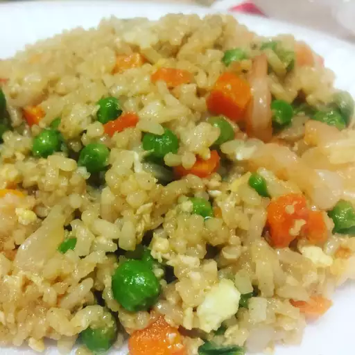

Shrimp Fried Rice

Description
This is a recipe for Japanese Shrimp Fried Rice with Yum Yum Sauce.
Below, you will learn how to mix the Yum Yum Sauce and combine it
to make the fried rice. Happy tasting!
Ingredients
Rice:
- 2 cups uncooked jasmine rice
- 3 cups water
- 3 tablespoons vegetable oil, divided
- 1 sweet onion, chopped
- 2 cloves garlic, crushed and minced
- 1 (16 ounce) package frozen peas and carrots
- 4 tablespoons butter, divided
- 2 eggs
- 4 tablespoons oyster sauce
- 3 tablespoons soy sauce
- 1 lemon, juiced, divided
- salt and pepper to taste
- 1 pound uncooked medium shrimp, peeled and deveined
Yum Yum Sauce
- 1 cup mayonnaise
- 3 tablespoons water
- 2 tablespoons paprika
- 1 teaspoon ginger paste
- 1 teaspoon white sugar
- 1/2 teaspoon garlic powder
- salt and pepper to taste
Steps
-
Bring 3 cups water and rice to a boil in a saucepan. Reduce heat
to medium-low, cover, and simmer until rice is tender and water
has been absorbed, 20 to 25 minutes. Set aside and let cool.
-
Heat 2 tablespoons vegetable oil in a large, deep skillet over
medium-high heat. Add onion and cook until soft and translucent,
about 5 minutes. Stir in garlic and cook until fragrant, about 1
minute. Mix in cooked jasmine rice and frozen peas-carrot mixture;
fry until rice begins to brown, about 5 minutes. Add 2 tablespoons
butter and stir to combine. Pour in eggs and cook until firm. Add
oyster sauce, soy sauce, and 1/2 lemon juice; stir to combine. Season
with salt and pepper.
-
Heat remaining 1 tablespoon vegetable oil in a separate pan over medium-high
heat. Add shrimp and fry until they are bright pink on the outside and the meat
is opaque, 2 to 3 minutes. Mix in remaining 2 tablespoons butter and lemon juice.
Combine with fried rice mixture.
-
Combine mayonnaise, water, paprika, ginger paste, white sugar, garlic powder, salt,
and pepper in a bowl to make the yum yum sauce. Stir well. Serve with the fried rice.